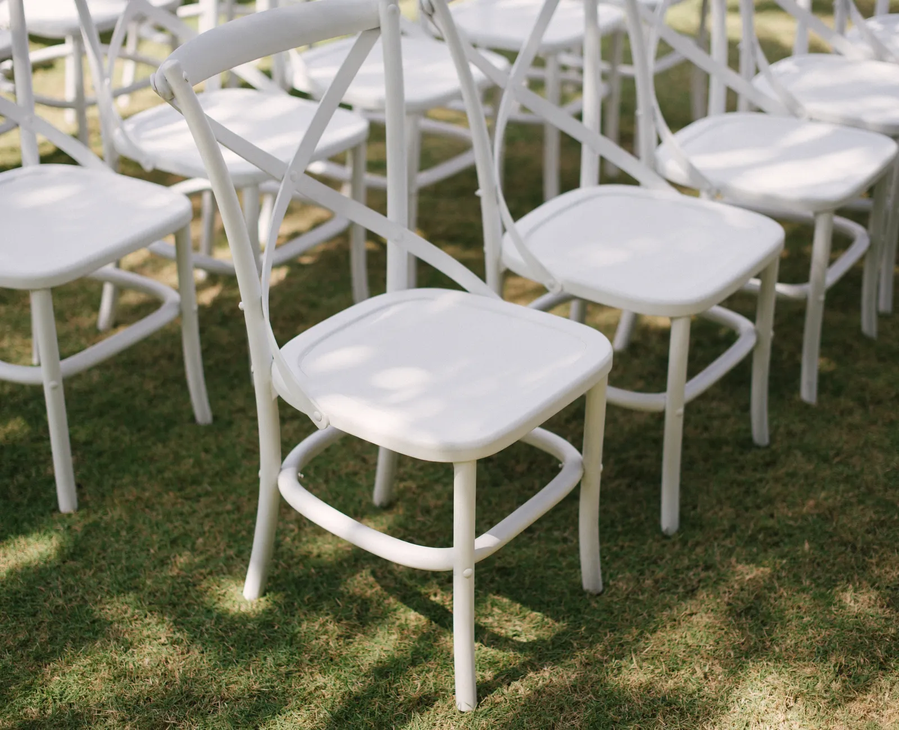
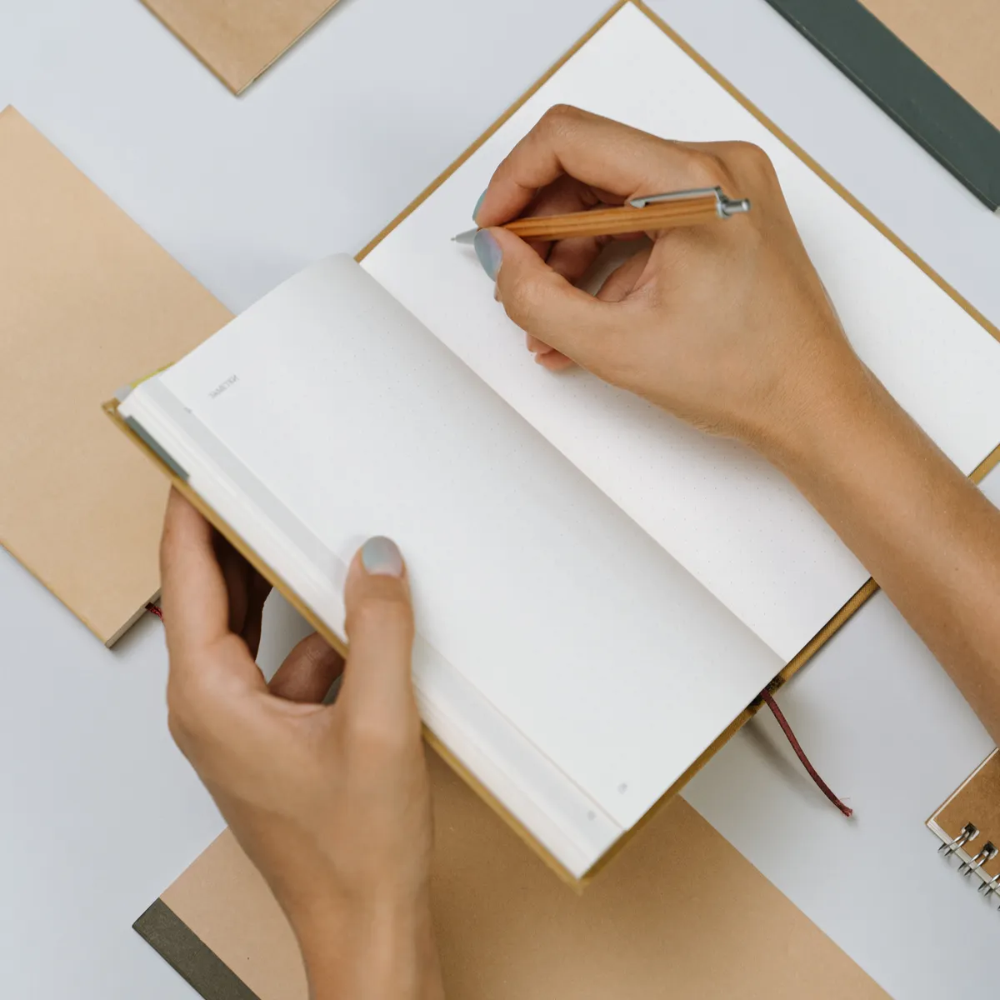
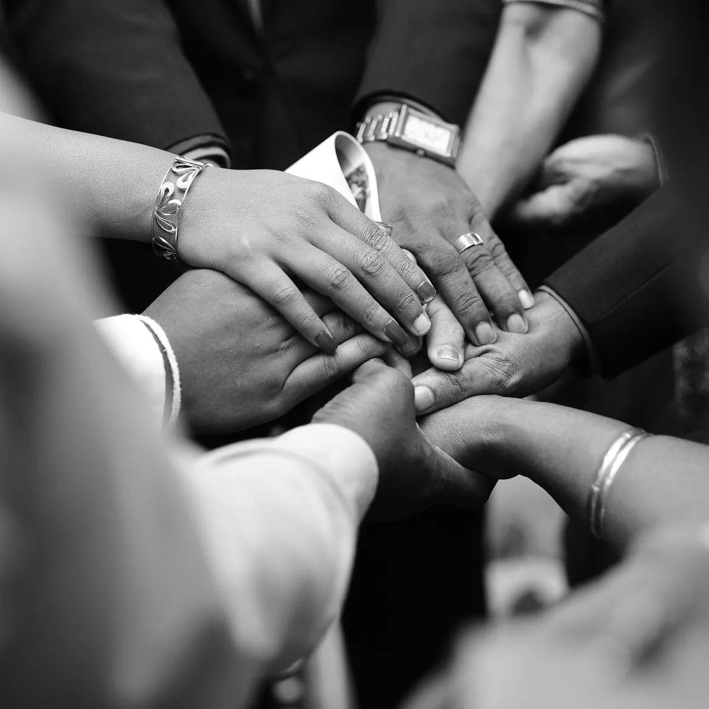
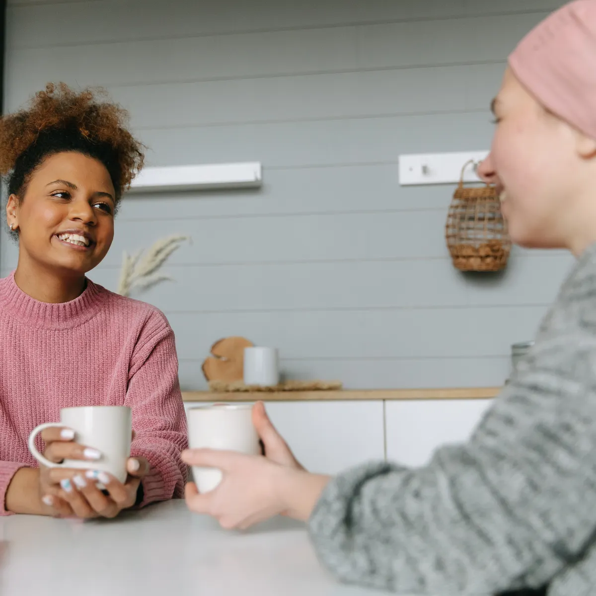
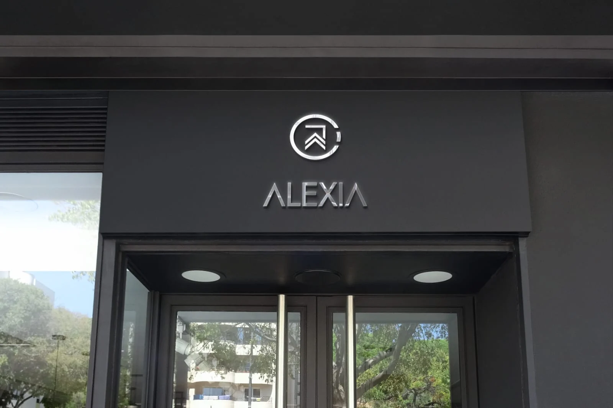

Programa de crecimiento personal
Un programa de crecimiento personal para mover eso que hoy te pesa.
Encuentros en grupo, acompañamiento uno a uno y una comunidad que sostiene lo que empezaste. De a un paso por semana, sin recetas mágicas.
- Encuentros grupales
- Charlas uno a uno
- Bitácora personal

Qué es esto
Una ronda de gente común decidida a mover algo
Acá no se viene a escuchar una charla motivacional: se viene a cambiar una cosa concreta, y a bancarla entre varios.
La Comunidad Reyes y Reinas es un programa de desarrollo personal con tres partes que no se separan: encuentros grupales donde se trabaja en serio, charlas uno a uno con Alexia para ajustar lo tuyo, y una comunidad que sigue estando el martes a la noche, cuando aflojan las ganas.
El nombre no es casual. Reyes y Reinas no es lo que vas a llegar a ser: es la manera de pararte que ya tenés adentro y que hace rato no usás.
Ver cómo trabajamosTu rueda
¿Por dónde te conviene empezar?
Tocá el área de tu vida que hoy más te pesa y en qué momento estás. Te decimos con cuál de las tres instancias arrancar.
Vínculos
Cómo trabajamos
Tres cosas, siempre en el mismo orden


-
Mirar sin adornos
Antes de proponerte nada, miramos dónde estás parada de verdad: qué te está pasando, qué venís posponiendo y qué ya intentaste. Sin diagnósticos ni etiquetas.
Sale de acá con una sola cosa: cuál es el primer nudo.
-
Un paso por semana
Nada de cambiarlo todo el lunes. Cada semana se define una acción chica, posible, escrita en tu bitácora — y a la semana siguiente se revisa qué pasó con ella.
Lo chico sostenido gana siempre contra lo grande abandonado.
-
Nadie sube solo
El grupo es el que te sostiene cuando la semana viene torcida. Se comparte lo que salió y lo que no, y esa ronda es la que hace que el proceso no se corte a los veinte días.
Por eso es una comunidad y no un curso.
La comunidad
Qué pasa cuando estás adentro
-
El encuentro grupal
La ronda completa, con un tema por encuentro y tiempo real para que cada uno hable. Se sale con una acción escrita, no con apuntes.
-
La charla uno a uno
Lo que no se dice en grupo se dice acá. Es la instancia donde se ajusta tu recorrido a lo que te está pasando de verdad.
-
Tu bitácora
Un cuaderno propio donde queda escrito lo que decidiste cada semana. A los tres meses es la prueba más difícil de discutir.
-

El grupo entre semana
El chat de la comunidad no es de mensajes reenviados: es donde se avisa que la semana viene difícil y alguien contesta.
-
Encuentros abiertos
Cada tanto la ronda se abre para quien todavía no se sumó. Es la forma más honesta de ver si esto es para vos.
-
El después
Cuando el programa termina, la comunidad sigue. Muchos vuelven a la ronda, ahora del lado de los que sostienen.
Arrastrá para ver todo
Quién sostiene la ronda
La comunidad tiene un lugar y una cara
Alexia creó el programa Reyes y Reinas después de años de acompañar a personas que querían cambiar algo y no encontraban con quién. La marca lleva su nombre porque el que atiende, escucha y arma cada encuentro es siempre la misma persona.
El local tiene puerta a la calle: acá se hacen los encuentros, las charlas uno a uno y las rondas abiertas.
Escribile a Alexia
Voces de la ronda
Lo que dicen los que ya pasaron
Llegué convencida de que el problema era el trabajo. A la tercera semana entendí que el problema era que no me estaba escuchando a mí. Nadie me lo dijo: lo escribí yo en la bitácora.
Lo que me sostuvo no fueron los encuentros: fue el martes a la noche, cuando escribí que no podía más y me contestaron cuatro personas.
Venía de tres cursos que abandoné. Este lo terminé porque cada semana era una sola cosa, y esa sí la podía hacer.
Preguntas
Lo que casi todos preguntan antes de empezar
Si lo tuyo no está acá, escribilo por WhatsApp y te contesta Alexia.
¿Necesito experiencia previa en algo de esto?
No. La mayoría llega sin haber hecho nunca un proceso así. El encuentro inicial existe justamente para eso: mirar dónde estás parada hoy y decidir por dónde conviene empezar.
¿Los encuentros son en grupo o uno a uno?
Los dos. El programa es grupal, y cada persona tiene además instancias uno a uno con Alexia. La ronda sostiene, la charla individual ajusta.
¿Y si una semana no puedo ir?
No se pierde el hilo. La bitácora personal y la comunidad hacen que puedas retomar sin quedarte atrás, y siempre se puede reacomodar.
¿Cómo sé si esto es para mí?
Contanos por WhatsApp qué te está pasando. Si el programa no es lo que necesitás, te lo decimos: no sumamos gente para llenar la ronda.
Empezá
La próxima ronda arranca con o sin vos. Mejor con.
Contanos en dos líneas qué querés mover. Alexia te responde y te dice si conviene empezar por una charla uno a uno o directo en el grupo.
+54 9 11 3916-3255